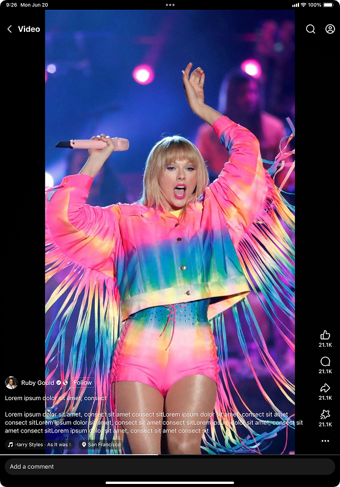

$2B ANNUAL REVENUE IMPACT
Full Case Study→
Video and Reels on Facebook for iPad
The Problem
Significant content cropping issues on the immersive Reels viewer on Facebook for iPad led to advertiser revenue loss, and worse user experience.
The Results
I led a redesign from conception to MVP launch of the Reels immersive viewer, which led to:
- $89M bi-weekly revenue increase ($2 billion annually)
- 1.5% increase in total watch time
- 0.74% increase in Daily Active Users
